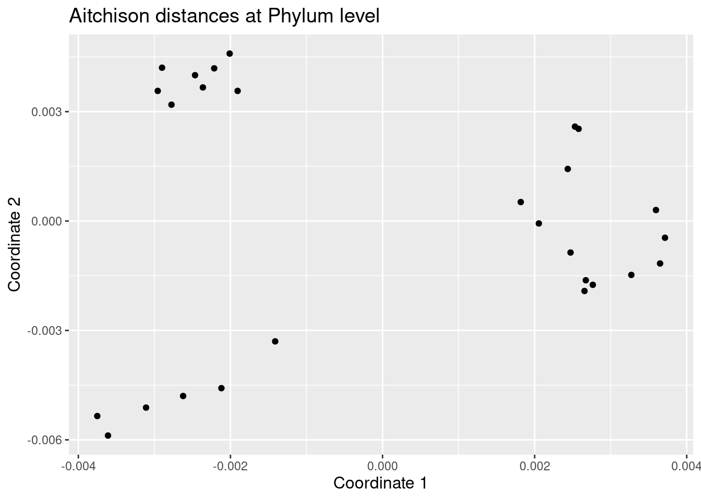
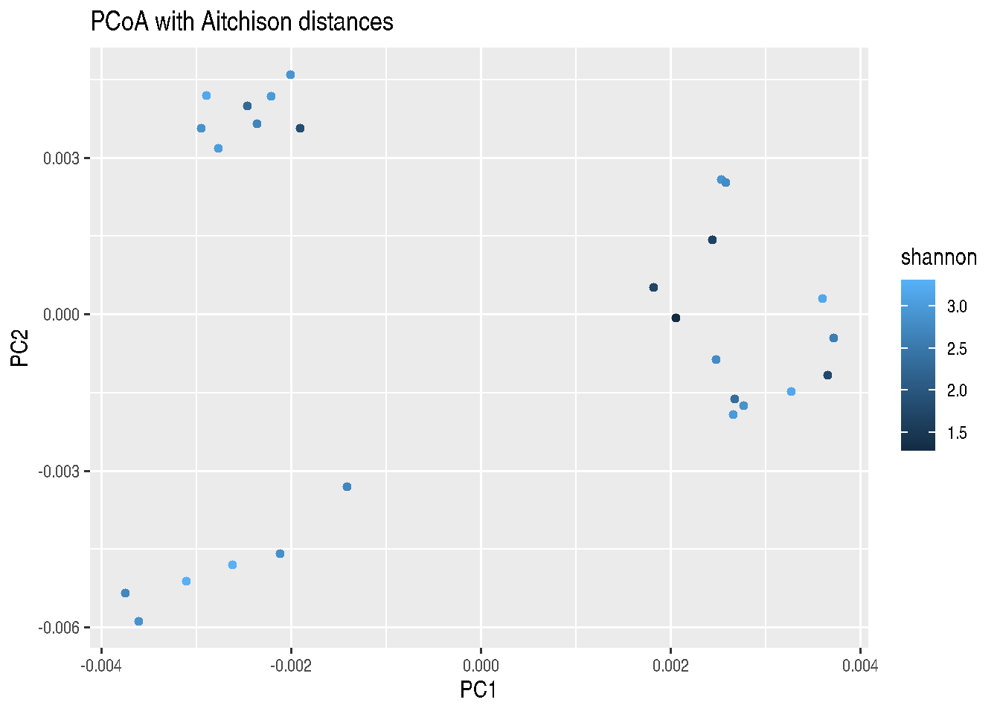
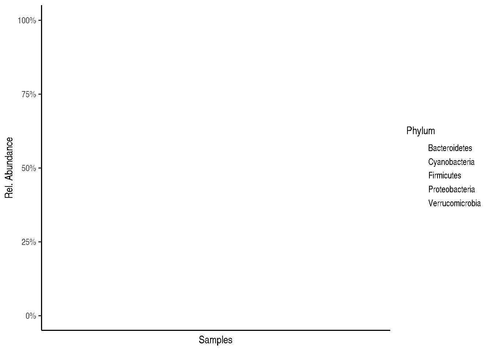
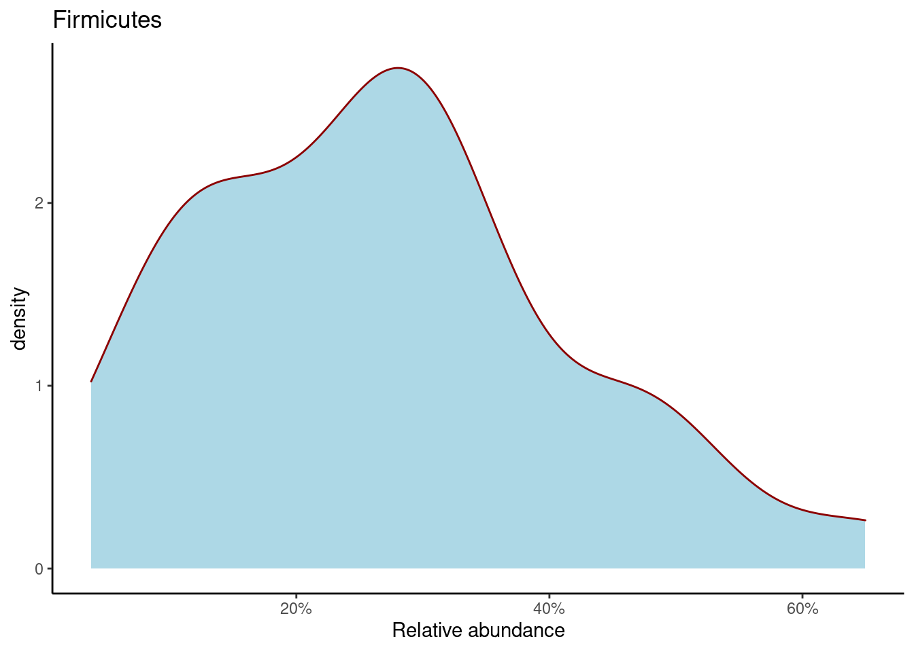

7 Beta diversity
In this section, we go through how to calculate and visualize beta diversity.
Beta diversity reflects the difference in microbial composition between samples. Unlike alpha diversity, where we calculate diversity within a sample, any particular beta diversity value can only be calculated between two samples. There are different ways to measure the distance between two samples. Some of the common choices include Bray-Curtis, Unifrac, Jaccard index, and the Aitchison distance metric. Each of these (dis)similarity measures emphasizes different aspects of (dis)similarity. For example, UniFrac is a distance metric that incorporates phylogenetic information between samples. Or, the Jaccard-index measures the distance based on presence/absence of any taxon irrespective of its abundance.
7.1 Examples of PCoA with different settings
After calculating beta diversity, we end up with a (dis)similarity matrix that contains for each sample the distance to any other sample. To explore our data, we would like to visualize the distances between samples and potentially map meta data into the same graph. This would enable us to explore whether distance between samples could be related to known variables. Given the many dimensions in the matrix, we first need to apply a technique that summarises most of the information into fewer dimensions (components). Principal Coordinate Analysis (PCoA) is a technique that can achieve exactly that.
As a side note for those of you familiar with Principal Component Analysis (PCA): A PCoA where you enter a matrix of Euclidean distances will be similar to a PCA of the microbial abundances (except for potential scaling differences).
Back to our PCoA: Typically, we retain 2-3 components that contain most of the information in the data. Note however, that the other components might contain important information as well. After all these steps, we thus end up with 2-3 new variables (components), where each sample has a score on each of those components. We can then simply create a 2-D or a 3D plot with the components on the x and y (and z) axis. We could do the same for any combination of the many components a PCoA calculates. Enough theory, let’s try to put this into practice!
7.1.1 PCoA for ASV-level data with Bray-Curtis
We will illustrate what we described above using different distance measures and also applied to different taxonomic ranks. We start with a PCoA that uses a Bray Curtis matrix as input, calculated at the Genus level.
# Relative abundance table
rel_abund_assay <- assays(tse)$relabundance
# Transposes it to get taxa to columns
rel_abund_assay <- t(rel_abund_assay)
# Calculates Bray-Curtis distances between samples. Because taxa is in columns,
# it is used to compare different samples.
bray_curtis_dist <- vegan::vegdist(rel_abund_assay, method = "bray")
# Does principal coordinate analysis
bray_curtis_pcoa <- ecodist::pco(bray_curtis_dist)
# all components could be found here:
# bray_curtis_pcoa$vectors
# But we only need the first two to demonstrate what we can do:
bray_curtis_pcoa_df <- data.frame(pcoa1 = bray_curtis_pcoa$vectors[,1],
pcoa2 = bray_curtis_pcoa$vectors[,2])
# Creates a plot
bray_curtis_plot <- ggplot(data = bray_curtis_pcoa_df, aes(x=pcoa1, y=pcoa2)) +
geom_point() +
labs(x = "Coordinate 1",
y = "Coordinate 2",
title = "Bray-Curtis PCoA with relative abundances") +
theme(title = element_text(size = 10)) # makes titles smaller
bray_curtis_plot
7.1.2 PCoA for ASV-level data with Aitchison distance
Now the same using Aitchison distance. This metric corresponds to Euclidean distances between CLR transformed sample abundance vectors.
# Does clr transformation. Pseudocount is added, because data contains zeros.
tse <- transformCounts(tse, method = "clr", pseudocount = 1)
# Gets clr table
clr_assay <- assays(tse)$clr
# Transposes it to get taxa to columns
clr_assay <- t(clr_assay)
# Calculates Euclidean distances between samples. Because taxa is in columns,
# it is used to compare different samples.
euclidean_dist <- vegan::vegdist(clr_assay, method = "euclidean")
# Does principal coordinate analysis
euclidean_pcoa <- ecodist::pco(euclidean_dist)
# Creates a data frame from principal coordinates
euclidean_pcoa_df <- data.frame(pcoa1 = euclidean_pcoa$vectors[,1],
pcoa2 = euclidean_pcoa$vectors[,2])
# Creates a plot
euclidean_plot <- ggplot(data = euclidean_pcoa_df, aes(x=pcoa1, y=pcoa2)) +
geom_point() +
labs(x = "Coordinate 1",
y = "Coordinate 2",
title = "Euclidean PCoA with CLR transformation") +
theme(title = element_text(size = 12)) # makes titles smaller
euclidean_plot
7.1.3 PCoA aggregated to Phylum level
We use again the Aitchison distances in this example but this time applied to the phylum level.
# Does clr transformation. Psuedocount is added, because data contains zeros.
tse_phylum <- transformCounts(tse_phylum, method = "clr", pseudocount = 1)
# Gets clr table
clr_phylum_assay <- assays(tse_phylum)$clr
# Transposes it to get taxa to columns
clr_phylum_assay <- t(clr_phylum_assay)
# Calculates Euclidean distances between samples. Because taxa is in columns,
# it is used to compare different samples.
euclidean_phylum_dist <- vegan::vegdist(clr_assay, method = "euclidean")
# Does principal coordinate analysis
euclidean_phylum_pcoa <- ecodist::pco(euclidean_phylum_dist)
# Creates a data frame from principal coordinates
euclidean_phylum_pcoa_df <- data.frame(pcoa1 = euclidean_phylum_pcoa$vectors[,1],
pcoa2 = euclidean_phylum_pcoa$vectors[,2])
# Creates a plot
euclidean_phylum_plot <- ggplot(data = euclidean_phylum_pcoa_df, aes(x=pcoa1, y=pcoa2)) +
geom_point() +
labs(x = "Coordinate 1",
y = "Coordinate 2",
title = "Aitchison distances at Phylum level") +
theme(title = element_text(size = 12)) # makes titles smaller
euclidean_phylum_plot
7.2 Highlighting external variables on PCoA plot
As explained in the introduction, it can help to explore the data if we map other variables on the same plot. For example, by changing the color of the points based on that variable. Let’s see how we could do that:
7.2.1 PCoA with discrete sample grouping variable shown with colors
# Adds the variable we later use for coloring to the data frame
euclidean_patient_status_pcoa_df <- cbind(euclidean_pcoa_df,
patient_status = colData(tse)$patient_status)
# Creates a plot
euclidean_patient_status_plot <- ggplot(data = euclidean_patient_status_pcoa_df,
aes(x=pcoa1, y=pcoa2,
color = patient_status)) +
geom_point() +
labs(x = "Coordinate 1",
y = "Coordinate 2",
title = "PCoA with Aitchison distances") +
theme(title = element_text(size = 12)) # makes titles smaller
euclidean_patient_status_plot
7.2.2 PCoA plot with continuous variable
We can do the same as above using any continuous variable. E.g. let us see how the plotted samples differ in their alpha diversity:
# Adds coloring information to the data frame, creates new column
euclidean_shannon_pcoa_df <- cbind(euclidean_pcoa_df,
shannon = colData(tse)$Shannon_index)
# Creates a plot
euclidean_shannon_plot <- ggplot(data = euclidean_shannon_pcoa_df,
aes(x=pcoa1, y=pcoa2,
color = shannon)) +
geom_point() +
labs(x = "Coordinate 1",
y = "Coordinate 2",
title = "PCoA with Aitchison distances") +
theme(title = element_text(size = 12)) # makes titles smaller
euclidean_shannon_plot
7.3 Estimating associations with an external variable
Next to visualizing whether any variable is associated with differences between samples, we can also quantify the strength of the association between the variation in community composition (beta diversity) and external factors. The current standard way to do this is to perform a so-called permutational multivariate analysis of variance (PERMANOVA). This method takes as input the ASV/OTU table, which measure of distance you want to base the test on and a formula that tells the model how you think the variables are associated with each other. Let’s try it:
# First we get the relative abundance table
rel_abund_assay <- assays(tse)$relabundance
# again transpose it to get taxa to columns
rel_abund_assay <- t(rel_abund_assay)
# then we can perform the method
permanova_cohort <- vegan::adonis(rel_abund_assay ~ cohort,
data = colData(tse),
permutations = 9999)
# we can obtain a the p value for our predictor:
print(paste0("Different different cohorts and variance of abundance between samples, p-value: ",
as.data.frame(permanova_cohort$aov.tab)["cohort", "Pr(>F)"]))## [1] "Different different cohorts and variance of abundance between samples, p-value: 0.7378"As we see, the cohort variable is not significantly associated with microbiota composition (p-value is over 0.05).
We can still visualize those taxa whose abundances are the most different between cohorts. This gives us information how taxonomic abundances tend to differ between different cohorts. In order to do that, we first need to extract the model coefficients of taxa:
# Gets the coefficients
coef <- coefficients(permanova_cohort)["cohort1",]
# Gets the highest coefficients
top.coef <- sort(head(coef[rev(order(abs(coef)))],20))
# Plots the coefficients
top_taxa_coeffient_plot <- ggplot(data.frame(x = top.coef,
y = factor(names(top.coef),
unique(names(top.coef)))),
aes(x = x, y = y)) +
geom_bar(stat="identity") +
labs(x="", y="", title="Top Taxa") +
theme_bw()
top_taxa_coeffient_plot
The above plot shows taxa as code names, and it is hard to tell which bacterial groups they represent. However, it is easy to add human readable names. We can fetch those from our rowData. Here we use Genus level names:
# Gets corresponding Genus level names and stores them to top.coef
names <- rowData(tse)[names(top.coef), ][,"Genus"]
# Adds new labels to the plot
top_taxa_coeffient_plot <- top_taxa_coeffient_plot +
scale_y_discrete(labels = names) # Adds new labels
top_taxa_coeffient_plot
7.4 Further resources
For more examples, see a dedicated section on beta diversity in the online book.